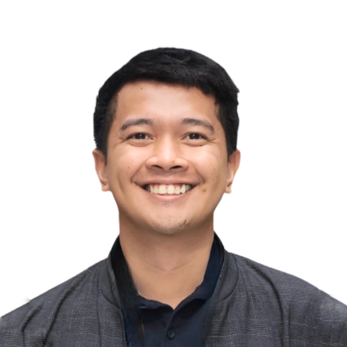

Programme Operations & Knowledge Management · Climate & Hydromet Systems
Programme Operations and Knowledge Management professional with 5+ years of combined public sector and international development experience, holding a Master's in Climate & Resilience-focused African Studies with fieldwork in Kenya. I've co-engineered the tracking systems that let Programme Managers monitor 100+ international climate and hydromet projects at WMO, and co-led institutional documentation migrations to UN records standards, work I'd bring to the SOFF Secretariat's Readiness and Preparatory Support Programme.

Timothy Earl Mateo Castillon
Programme Operations & Knowledge Management
Background
Operational systems-building, records governance, and stakeholder coordination across the UN system.
I'm a Programme Operations and Knowledge Management professional with 5+ years of combined public sector and international development experience. At the World Meteorological Organization, I co-designed and built the centralized SharePoint tracking system that Programme Managers use to monitor a global portfolio of 100+ international climate and hydromet projects, working directly with the KIM Officer and programme managers to shape the system around their actual monitoring needs.
I've also led the migration of 2,500+ institutional documents to a new CMS platform, establishing metadata taxonomies and post-migration governance frameworks to keep records compliant with UN standards. My academic background adds a substantive layer to this: a Master's in Climate & Resilience-focused African Studies (EMJMD), with fieldwork in Narok and Nairobi, Kenya, and a thesis on disaster risk management strategies.
I'm currently building growing technical capability in data analytics, Python and SQL, through an ongoing Data Science qualification at Harvard's Extension School. I'm looking to bring this combination of systems-building, operational rigor, and cross-institutional collaboration to the SOFF Secretariat's Readiness and Preparatory Support Programme.
Competencies
Core competencies built across the World Meteorological Organization, UNHCR, and national government programmes.
Co-designed and built the centralized SharePoint tracking system used by WMO Programme Managers to monitor a global portfolio of 100+ climate and hydromet projects, shaped directly around their monitoring needs.
Master's-level research across three African contexts — Kenya, Tanzania, Zimbabwe — on disaster risk management, urbanization, and resource vulnerability, applying GIS and qualitative modeling.
Led migration of 2,500+ institutional documents to a new CMS platform; established metadata taxonomies and post-migration governance frameworks compliant with UN records standards.
Working knowledge of Python (Pandas, NumPy), SQL, Power BI, and Tableau; produced analytical reports and knowledge products for 5 Communities of Practice at WMO.
Facilitated collaboration across WMO, UNHCR, and national government programmes, managing multi-institutional workstreams under tight deadlines.
Designed and delivered training sessions for 300+ staff worldwide; produced advocacy and knowledge materials for global and multi-country audiences.
Career
A journey through international organizations, digital platforms, and global data systems.
Scientific & Technical Record
Selected work spanning the knowledge lifecycle — from field research to the systems and reports that put it into action.
Academic Background
A foundation built across three continents and multiple disciplines.
Credentials
Verified credentials in data analytics and programme management, alongside UN-system compliance training.
Also certified: Python Data Associate (DataCamp).
Communication
Multilingual capacity developed through international study and professional experience.
Let's Connect
Open to consulting engagements, international programme roles, and data science collaborations.